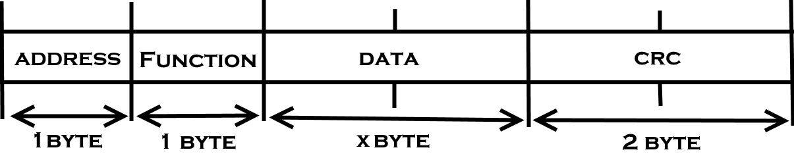

On the Subject of ModBus
Summary
- Glossary
- History
- Goal
- ModBus Protocol
- Address
- Functions
Glossary
History
A little of History is good, right?
The ModBus is a serial communications protocol originally published by Modicon in 1979, for use with it's PLCs (Programmable logic controllers).
It's commonly used as means of connecting industrial electronic devices. Here it has been used to make a bomb.
Goal
You just have to follow the instructions. It's as simple as cooking a turkey!
To defuse the module, it is simple. Decode the protocol and send the correct frame.
Do not send anything before you are done writing the frame!
correct frame? send anything? What??
If everything I've said scared you, just read the part ModBus Protocol carefully and follow the example.
ModBus Protocol
"READ THIS SECTION CAREFULLY! PLEASE!"
Here is the frame, for advance programmer, you know how to do it.
If not, go to "annex - How to write ModBus frame ?".
 Booom ModBus Protocol!
PS : 16 bits word (2 bytes) are sent in "Big endian". (Most Significant Byte First).
Address
"Where do I have to send the defuse code ?"
The address part define where you want to access the memory.
Convert the first number (or letter) from ASCII to hexadecimal number (See Annex - ASCII Tab), it's the address (yay!).
Do not use decimal numbers!
"Got some trouble ? Check annex - How to decode address ModBus"
Functions
"Hmm... I guess it's an important section..."
Here, the module use only 2 function :
- Function 04, used to read a data word.
- Function 06, used to write a data word.
In order to find the right function to pick, you need to :
- Convert the last number (or letter) from ASCII to decimal number (See Annex - ASCII Tab),
- Take the modulo 4 of this number (e.g. 12%4 = 0, 15%4 = 3),
- Multiply by 3,
- Take the modulo 2 of the result.
This number should be 0 or 1, if not, you havn't done the modulo 2 correctly...
If the result is :
- 0, use function 06.
- 1, use function 04.
When it said function 06, you need to write "06" for function part.
The next section is divided into 2 parts, the data for the function 04 and for the function 06. Pick the one you find in function part.
Data for Function 04
Read the right data, defuse the module, be a hero. BOOM dream achieved.